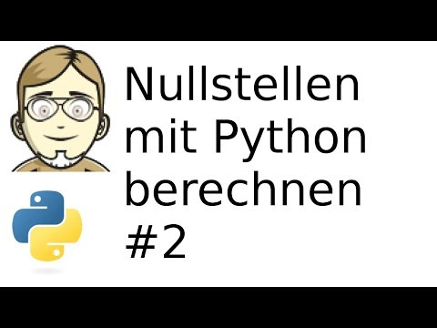
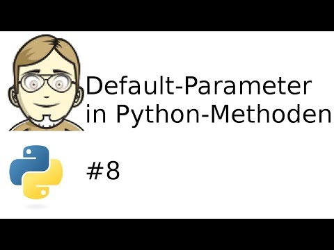

Ich habe mich mal wieder an ein paar Videos [1] versucht, nachdem es auf meinem YouTube-Kanal längere Zeit etwas ruhiger geworden ist. In dieser Reihe habe ich verschiedene grundlegende Aspekte der Python-Programmierung am Beispiel von mathematischen Funktionen dargestellt.
Im ersten Video wird eine Wertetabelle mit Hilfe einfacher Python-Funktionen gezeichnet.
Im nächsten Schritt versuchen wir, ein algorithmisches Problem mit einem Pythonprogramm zu lösen: die Berechnung der Nullstelle einer Funktion.
Schließlich wird die Funktion mit Hilfe der Pythonbibliothek matplotlib gezeichnet. Wir schauen uns in diesem Zusammenhang auch das wichtige Konstrukt der "list comprehension" an.
Nach den ersten Versuchen mit Funktionen, kann die Implementierung jetzt in eine objekt-orientierte Version mit Klassen und Objekten überführt werden.
Die Dokumentation von Klassen und Objekten ist wichtig für andere Programmierer - und auch für einen selbst, wenn man nach längerer Zeit wieder auf den Quelltext schaut. Python bietet hierfür umfangreiche Möglichkeiten, den eigenen Quelltext zu dokumentieren. Eine grundlegende Möglichkeit stelle ich in dem Video vor.
Unter dem Begriff Lambda-Ausdruck lassen sich anonyme Funktionen, also Funktionen oder Methoden ohne einen Namen, zusammenfassend beschreiben.
Schön, wenn das Programm das tut, was es soll. Damit dies auch in Zukunft so bleibt, können Programme automatisch getestet werden. Das geht zum einen mit Unit-Test, zum anderen mit assert-Anweisungen. Beide Konzepte werden in dem Video vorgestellt.
Nicht immer müssen Parameter bei einem Aufruf übergeben werden. Man kann auch Default-Werte angeben, die verwendet werden, wenn kein Parameter beim Aufruf angegeben wurde.
| [1] | Die verlinkten Videos wurden bei YouTube veröffentlicht. Gleichzeitig lade ich sie aber auch immer an einer zweiten Stelle hoch. In diesem Falle findet man die Videos auch bei archive.org |